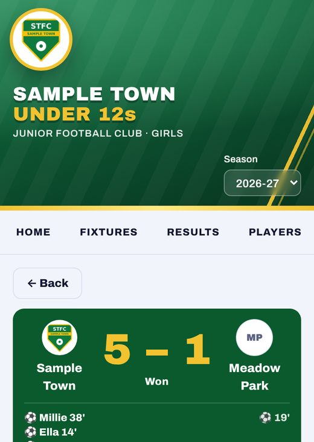
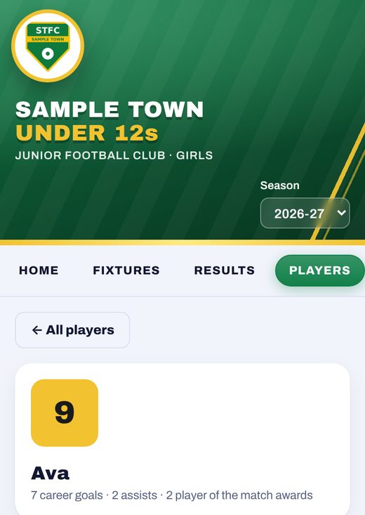
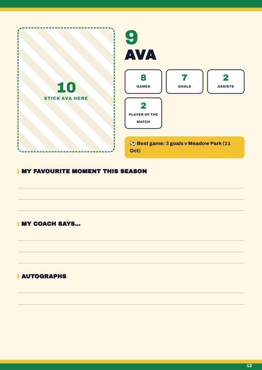
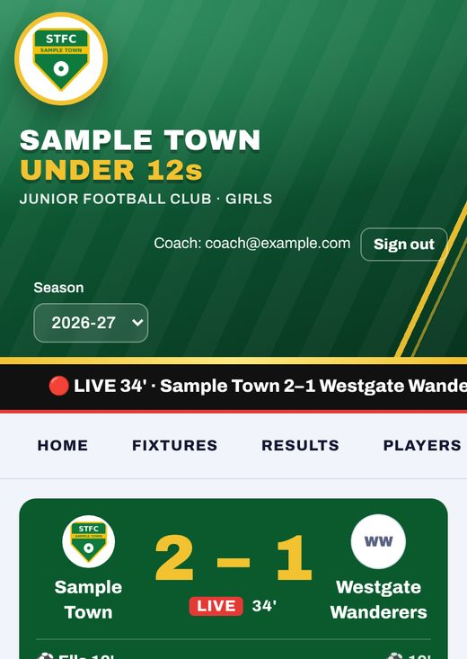
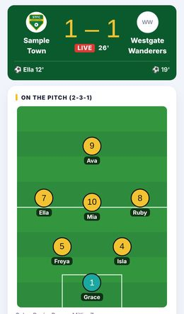
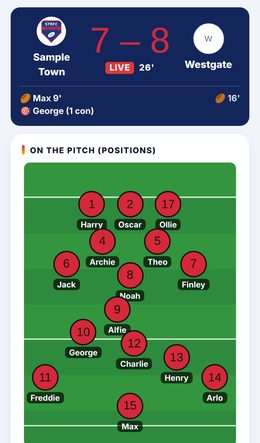
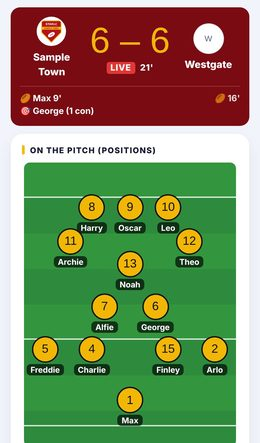

Live match mode
The coach taps goals, assists and subs from the touchline. Parents get phone alerts for the line-up, kick-off, goals, half time and full time, with a live score, pitch view and commentary.
Team websites for grassroots football and rugby
Your team's own website, in your crest and colours. Goals, line-ups and full time land on every parent's phone, and the whole season is kept, child by child, for everyone to look back on.
3 of 5 founding-team places left for the 2026-27 season
Founding teams pay nothing until June 2027, in return for honest feedback.
Now keeping the season for 2 teams
Sample Town Under 12s is a made-up team. We never use real children in our examples.
What parents and coaches see

Scorers, the ground, the competition and the coach's report for every game.

Games, goals and assists, with milestones like a first goal spotted for you.

A page per child with their season in numbers, ready to print.

Tap a goal, an assist or a sub. Parents' phones are told straight away.
All screens are from our made-up Sample Town Under 12s. Open the demo site to click around it yourself.
From the touchline
"Parents who can't make it on a Sunday used to ask in the group chat how we were getting on. Now it's on their phone as it happens, and every child's season is kept on one link. It's the first thing our families open on matchday."
Sound familiar?
Parents who can't make it spend the game refreshing the group chat. Coaches retype line-ups and results every Sunday night. And a child's first goal, their tenth game, their best season, all get buried under "who's bringing the oranges?"
Touchline Tales puts it all in one place, made for the side of a pitch on a cold Sunday morning.
How it works
A one-minute look at a matchday with our made-up demo team, Sample Town Under 12s, on the coach's phone and a parent's.
Fixtures, results, players, a live game and the coach's view. Nothing you change is saved.
What your team gets
The coach taps goals, assists and subs from the touchline. Parents get phone alerts for the line-up, kick-off, goals, half time and full time, with a live score, pitch view and commentary.
Appearances, halves played, goals, assists and clean sheets, with a page for every player. Milestones like a first goal or ten games are spotted automatically.
Every game has its line-up, timeline, awards and the coach's report. Filter by league, cup, friendly or tournament, and keep an honours board.
Squad announcements, full time, player of the match and the month's fixtures, ready for Facebook and Instagram in your colours, with a caption to copy.
A cover, the season in numbers, results, honours and a page for every player. Print it or save it as a PDF. Photos stay on the coach's phone.
Parents say who's available, coaches pick the squad, and fixtures sync to iPhone, Google and Outlook calendars.
Coaches send fixes and requests from inside the site. Small fixes are usually done the same day.
Football and rugby
Pick football, rugby union or rugby league when we set up your team. The scoring, line-ups, stats, alerts and matchday graphics all follow your sport, so a try never shows up as a goal.

⚽ Football

🏉 Rugby union

🏉 Rugby league
Every sport gets the rest of Touchline Tales too: fixtures, availability, calendars, match reports, the sticker book and coach-only tools. The teams in these pictures are made up. We never use real children in our examples.
Features
Every team gets all of this, in the club's own crest, colours and sponsors.
Getting started
A 15-minute demo on your own phone, using our made-up demo team.
Your crest, colours, players' first names and fixtures. Your club welfare officer signs off how children's information is handled.
We set everything up and load the season. You drop the link in the parents' group and you're away.
Safe for children by default
Welfare officer or club secretary? Read our checklist for signing off a team website, or see the data processing agreement your club would accept.
Who's behind it
"I coach a junior football team. I built our team's website so parents who couldn't make it on a Sunday could still follow the game, and so every child's season was kept somewhere better than the group chat. Touchline Tales is that site, made for your team."
Questions about how children's information is handled come straight to me at hello@touchlinetales.club. More about Touchline Tales · What we've shipped
Follow what we're building on Facebook, Instagram and TikTok.
Price
£60 per team, per season
July to June, about £5 a month. Everything on this page included.
£35 once
We load your crest, colours, squad, fixtures and last season's results.
Free until June 2027
Our first five teams pay nothing for the 2026-27 season, in return for honest feedback.
Running three or more teams? Ask about a club price, and hand your welfare officer our checklist and data processing agreement. Every team from your third gets 10% off.
Not included: subs or payments, club membership, or custom features for one team.
Sign up
Just your name, email and club. We'll be in touch to book a 15-minute demo, and ask anything else then. There's no commitment, and nothing to pay as a founding team.
Please don't send any children's details here. We'll ask for first names later, once your welfare officer has signed off.
Questions
No. It's a website that works on any phone. Parents can save it to their home screen so it opens like an app. On iPhones, that's also what turns on goal alerts.
A few taps: the line-up before kick-off, then goals, assists and subs as they happen. Stats, playing time and the results page all update themselves.
Football, rugby union and rugby league. Tell us your sport, age group and team size, and the scoring, line-ups and wording are set up to match. If your club plays another sport, let us know in the sign-up form.
No, it sits alongside it. Touchline Tales is one site per team, wearing your club's crest, colours and sponsors.
Those run the club or the week: availability, subs, registrations and the club website. Touchline Tales is one team's matchday and season record, and many teams will use both. We've written a fair comparison of each: Spond, Teamzum and Pitchero.
Your season stays on the site, the sticker book is ready to print, and the next season picks up where you left off.
Before the free season ends in June 2027, we'll agree next season's terms with each founding team. Nothing is charged automatically. If you decide not to carry on, your season record is yours: under our data processing agreement you can ask for a copy, and we delete the site and its data within 30 days.